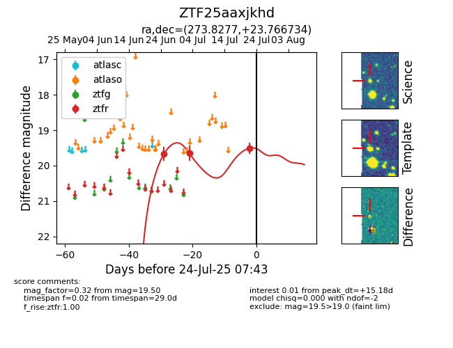

Target ZTF25aaxjkhd at 2025-07-24 07:43, see:
FINK: fink-portal.org/ZTF25aaxjkhd
Lasair: lasair-ztf.lsst.ac.uk/objects/ZTF25aaxjkhd
ALeRCE: alerce.online/object/ZTF25aaxjkhd
alt names
ZTF25aaxjkhd (ztf,fink)
coordinates:
equatorial (ra, dec) = (273.8277,+23.76673)
galactic (l, b) = (50.9026,+18.15758)
photometry
last ztfr=19.50
3 ztfr detections
